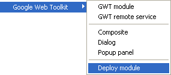
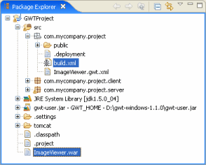
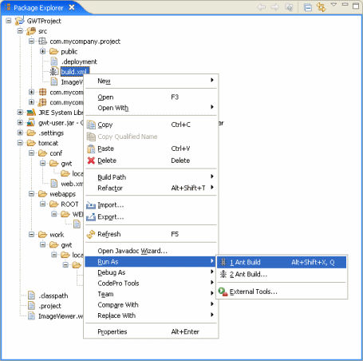
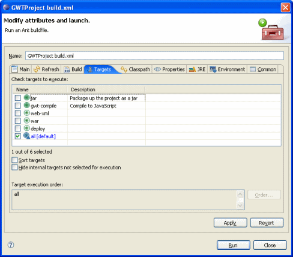

| Select your GWT
module file and right-click to select the Google Web Toolkit
> Deploy module command or click on the Deploy Module button in the main
Eclipse toolbar to open the Deployment dialog  |
Specify the application server
deployment options
|
Select the path
where the WAR file should be copied.
|
Multiple files are
created by the Deployment dialog.
Note that the build.xml file will be regenerated any time that the Deploy module command is used.  |
The build.xml
file contain all of the steps needed to recreate the WAR file
and deploy it to your server.
Note that if the module folder has files named build-1.5.xml or build.1.5.xml, then these files will be used as the templates for deployment. This allows you to completely customize and repeat the build process. You can add/move operations and targets as long as the modified script still references the same template variables. The original files are located here:
|
| You can rebuild and
redeploy your WAR file by right-clicking in the build.xml
file and selecting Run As > Ant Build or Run As > Ant
Build... (to invoke the ANT build.xml editor).  |
| You can use the
ANT build.xml editor to select specific targets to execute.  |